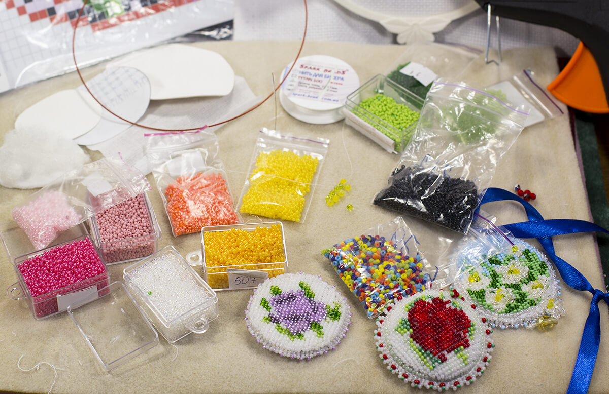

Какие материалы я использую?
В мире рукоделия существуют огромное множество разнообразных видов товаров. Разные производители, соответсвенно разное качество товара. Как выбрать лучшие материалы? По моему опыту, только методом пробы и ошибок. Действительно, высокая цена не является показателем качества. Для своих работ я использую высококачественный Японский бисер и стеклярус фирмы TOHO, а также чешский бисер фирмы preciosa. Немаловажно выбрать качественную основу и нити, которыми мы и пришиваем бисер. Если подобрать неподходящие нитки, они усложнят прроцесс работы, а в процессе носки броши, бусины и вовсе могут оторваться от основы. Возникает вопрос: а к чему, собственно пришивать бисер? Фетр. Универсальный материал в рукоделии. Очень удобен в использовании. Я выбираю достаточно плотный, мне так удобнее. Иглы для пришивания бисера следует выбирать самые тонкие. Хоть они и очень ломкие, зато любой бисер можно с лёгкостью пришить. Для ещё большего украшения вышивки, используют разнообразные стразы, крупные бусины и так далее. Недавно я приобрела так называемую канитель, которую очень удобно пришивать к брошам, создавая тем самым аккуратный контур рисунка.
